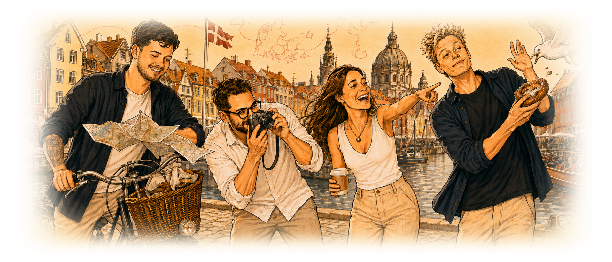

Velkommen til Næveklubbens turistguide

Kort og godt
Vi er en lille guide til dig, der gerne vil opleve byen som en lokal og ikke som en turist. Her finder du de steder, vi i Næveklubben, selv vender tilbage til: værtshuse med en historie, gader der er værd at gå ned ad, og udsigter der ikke står i alle rejsebøger. Vælg en by i menuen og se, hvad vi har samlet. Ingen billetkø, ingen ventetid — bare et par gode anbefalinger fra folk, der har brugt for meget tid på at lede efter dem.
Du kan læse mere om hvem vi er her.
Nyttige links
Vi kan meget, men...
Vi har alligevel valgt at samle en håndfuld nyttige links fra eksterne partnere, der kan hjælpe dig med at planlægge din tur.
- VisitDenmark - Turistguide med meget bred appel
- Rejseplanen - Perfekt, hvis du har tænkt dig at benytte offentlig transport
Omtale
Hvad vores kunder siger
Her er en lille samling af udsagn fra vores (svært) tilfredse kunder!
" Jeg havde aldrig troet, at jeg skulle opleve København fuldstændig som en lokal, men Næveklubbens anbefalinger var sublime. Jeg undgik alle de klassiske turistfælder og fik øjnene op for alle de små perler i byen, der gjorde mit ophold uforglemmeligt! " -- DefinitelyNotFrederikX
" Guiden gav mig præcis den slags København, jeg ledte efter: mindre turistbus, mere ‘hvordan i alverden fandt vi det her sted?’. Det føltes næsten ulovligt lokalt. " -- LarsLøkkeHjulet
" Jeg kom for kanalrundfarten, men blev for de små steder, som ingen på TikTok havde fortalt mig om endnu. Det er næsten imponerende. " -- MargretheDenAndenSide